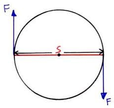
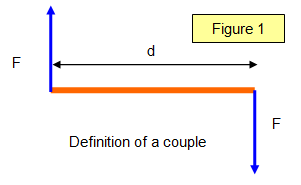

I was wrong to quit writing
The Greyio Heart Experiment is restarted
The last article I have published sounded like a goodbye, Today I thought that I am wrong stopping to write about my thoughts, ideas and mainly about you creative tech people. I have already laid how writing was helping me structure my way of thinking and ideating and how it was fuelling my reading experience because reading and writing are two components that support themselves each to the other like this couple of the Newtonian mechanics that make objects turn around


They are allowing motion forward by generating more ideas and the next thing to do to and experiment. These 4 days I have spent without hitting the button publish on Medium made me feel like I was lacking something. The main reason why I had decided to stop writing and publishing in Medium was because of a lack of resources, a high power computer for building and experimenting with these games ideas, data science models that will support the coming data-driven books, and book-driven platforms that are part of Book Dojo.
Today, I thought about your real engagement with my writings and it becomes clear that you deserve that I continue sharing with you by writing and publishing in Medium on a daily basis like I was doing a year since now.
Please forgive me to announce to you that I was stopping publishing articles and to come back to my decision but all of this is not about me but at least about you or at best about us.
Thank you for your understanding
The Greyio Heart experiment is restarted and the next article of this experiment will very likely be about them
‘Wigs are the next big thing’: A Boston beauty startup wants to make the buying process easier for Black women
more about them here